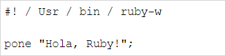
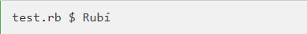
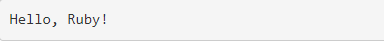
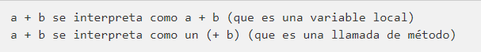
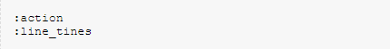
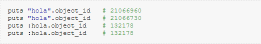
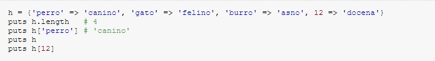
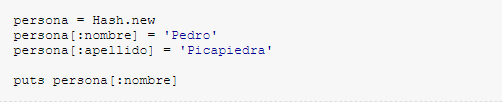
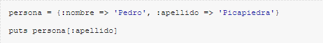

Ruby
Sintaxis del lenguaje de programación Ruby
Vamos a escribir un simple programa de Ruby. Todas las extensiones de archivo de Ruby son.rb.Por lo tanto, el siguiente código en el archivo test.rb.
Ejemplo

Aquí, bajo el supuesto de que el directorio / usr / bin tiene Rubí intérprete disponible. Ahora, trata de ejecutar el programa de la siguiente manera:

Esto producirá los siguientes resultados:

Programa de rubí en blanco
Carácter en blanco en el código Ruby, tales como espacios y tabulaciones en general se ignora, excepto cuando aparecen en la cadena si no ignorado.
A veces, sin embargo, que se utilizan para interpretar declaraciones ambiguas. Cuando la opción -w está habilitada, esta interpretación generará una advertencia.
Ejemplo:

Programa de rubí en el final de la línea
Rubí puso un punto y coma y un salto de línea se interpreta como el final de la instrucción. Sin embargo, si el final de la línea de Ruby se reunió
operadores como +, -, ni la barra invertida, que representan una continuación de un comunicado.
Identificador de rubí
Los identificadores son nombres de variables, constantes y métodos. identificadores de rubí entre mayúsculas y minúsculas. Esto significa que la RAM y la memoria RAM son dos identificadores diferentes en Ruby.
Rubí nombre identificador puede contener letras, números y el guión bajo (_).
Palabra reservada
La siguiente tabla muestra las palabras reservadas en Ruby. Estas palabras no pueden ser retenidos como el nombre de una constante o variable. Sin embargo, pueden ser utilizados como el nombre del método.
| COMIENZO | hacer | siguiente | entonces |
| FIN | otro | nulo | verdadero |
| alias | elsif | no | undef |
| y | final | o | a menos que |
| empezar | asegurar | rehacer | hasta |
| rotura | falso | rescate | cuando |
| caso | para | reintentar | mientras |
| clase | si | retorno | mientras |
| def | en | yo | __FILE__ |
| definido? | módulo | súper | __FILE__ |
Simbolos del lenguaje de programación Ruby
Hashes y Símbolos
Un símbolo parece una variable, pero está precedido de dos puntos. Ejemplos:

Los dos puntos se pueden interpretar como "la cosa llamada". Entonces :id, se interpreta como "la cosa llamada id". Los símbolos no contienen
valores como las variables. Un símbolo es una etiqueta, un nombre, nada más.
Símbolos vs Strings
Un símbolo es el objeto más básico que puedes crear en Ruby: es un nombre y una ID interna. Los símbolos son útiles por que dado un símbolo,
se refiere al mismo objeto en todo el programa. Por lo tanto, son más eficientes que los strings: dos strings con el mismo nombre, son dos objetos
distintos. Esto implica un ahorra de tiempo y memoria.

Cada vez que se ha usado un string, se ha creado un objeto nuevo. Por tanto, ¿cuándo usar un string, y cuándo un símbolo?
Si el contenido del objeto es lo importante, usa un string.
Si la identidad del objeto es importante, usa un símbolo.
Ruby usa una tabla de símbolos interna con los nombres de las variables, objetos, métodos, clases… Por ejemplo, si hay un método con el
nombre de control_movie, automáticamente se crea el símbolo :control_movie. Para ver la tabla de símbolos Symbol.all_symbols.
Como veremos a continuación, los símbolos son particularmente útiles para los hashes.
Hashes
Hashes, también conocidos como arrays asociativos, mapas o diccionarios, son parecidos a los arrays en que son una colección indexada de
referencias a objetos. Sin embargo, mientras que en los arrays los índices son números, en los hashes se puede indexar con objetos de
cualquier tipo: strings, expresiones regulares, etc.
Cuando se almacena un valor en un array, se dan dos objetos: el índice y el valor. A posteriori se puede obtener dicho valor, gracias al índice.

Los símbolos como índices
Por las ventajas antes citadas, se usan los símbolos como índices:

que es equivalente a:

A que tipo de paradigma pertenece?
El lenguaje Ruby es un ejemplo de paradigmas de programación como:
Paradigma Multiparadigma
Paradigma Orientada a objetos
Paradigma Reflexivo
Aplicación a descargar para editar y ejecutar
Se puede descargar el compilador oficial de Ruby paraen el siguiente link: Aqui
Ejemplo de programa
Factorial de N
1 class Integer
2 def factorial_recursive
3 self <= 1 ? 1 : self * (self - 1).factorial
4 end
5 def factorial_iterative
6 f = 1; for i in 1 ..self; f *= i; end; f
4 end
7 alias :factorial :factorial_iterative
4 end